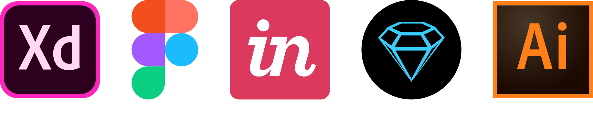
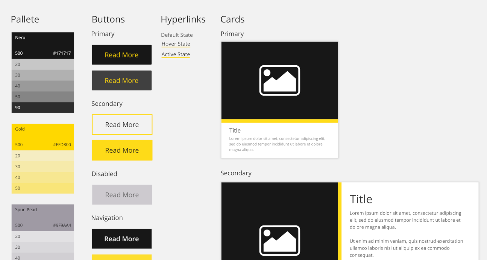
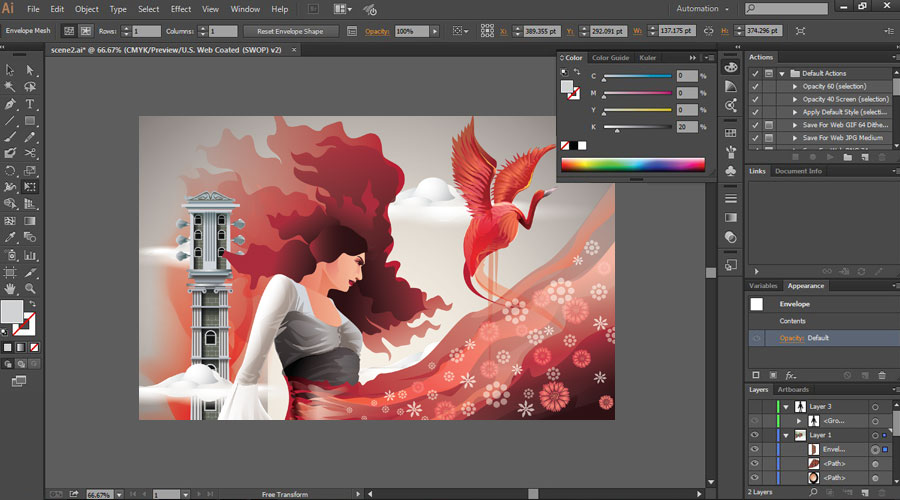
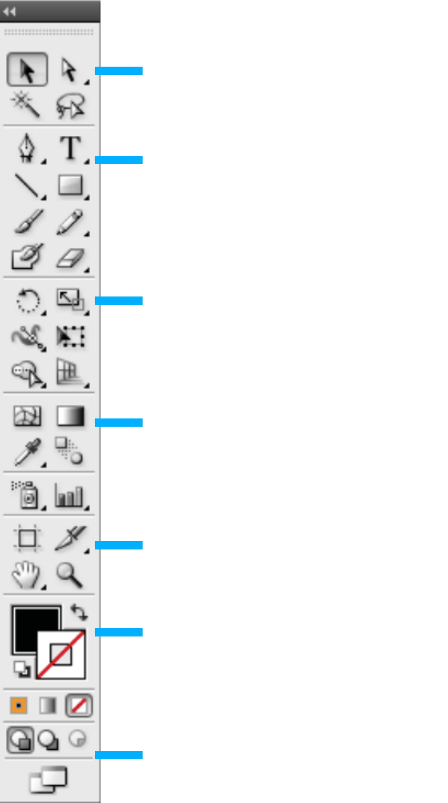
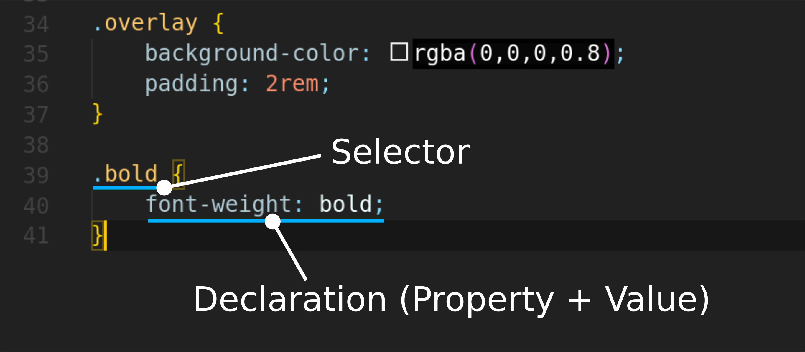

Web Design
Design and Code Implementation
 mjsolidarios@wvsu.edu.ph |
https://github.com/mjsolidarios
mjsolidarios@wvsu.edu.ph |
https://github.com/mjsolidarios
Use the navigation buttons or the arrow keys to proceed to the remaining slides.
F
You can also press > >F < < on your keyboard to show your presentation in fullscreen mode.
This presentation is best explored with up-to-date web browsers.
But as the digital space exponentially improve, new tools for design arise...
Let's start!
Create your first website design
Style Guide
A style guide refers to the visual design specifications needed to create the website.
The tool
Most of the web design tools require internet connection. Currently, Adobe Illustrator is our best option for offline use.
Illustrator is a vector based program. Unlike Photoshop, which is a raster based program.
Adobe Illustrator Tools
Web Design Exercise
First, let us pick our color pallete!
Implementing your Design
CSS | Cascading Style Sheets
CSS allows you to create rules that specify how the content of an element should appear.
Imagine that there is an invisible box around every HTML element and you can apply width, margin, colors or other styles on it.
CSS works by associating rules with HTML elements.
CSS declarations sit inside curly brackets and each is made up of two parts: a property and a value, separated by a colon. You can specify several properties in one declaration, each separated by a semi-colon.
Thank you!